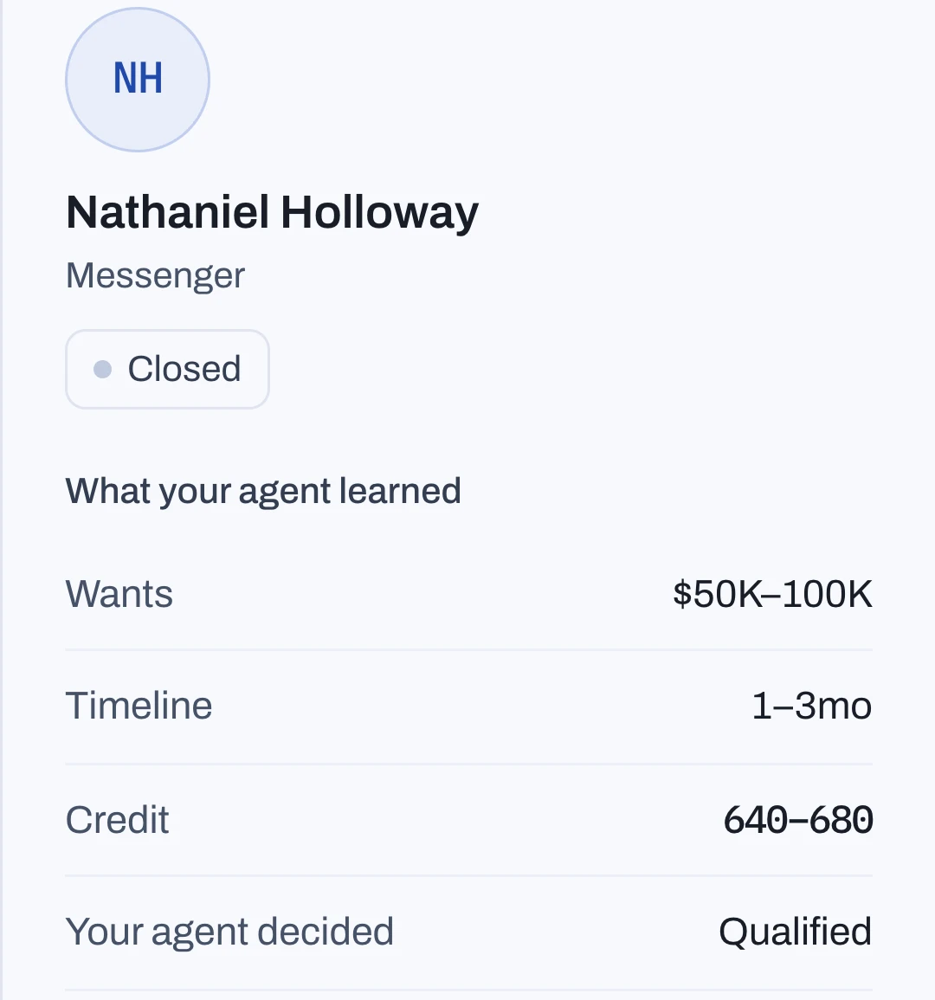
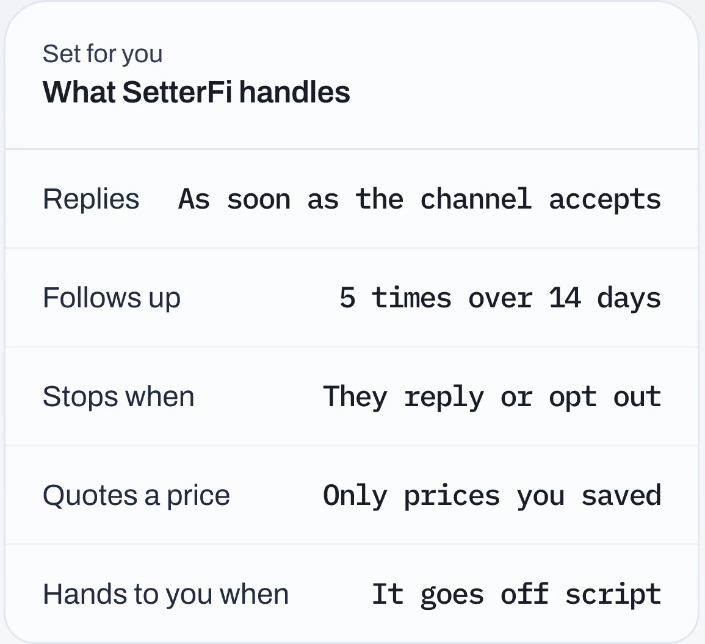

Without
2 bookedWith SetterFi
8 bookedHi, a friend said you help people get funded. Is that right?
It is. So I point you the right way: roughly where is your personal credit sitting right now?
Mid 600s I think. Haven't pulled it in a couple of months.
Understood. How much are you trying to raise for the business?
Maybe 100k if I can get it
And what sort of timing are you working to?
Next couple of months
What would the 100k go toward?
Ad spend mostly. Scaling the coaching program.
That works. One more: is the business bringing in revenue today?
About 8k a month
Good. You qualify for a call. Friday 11:00 or Monday 09:30?
friday 11
Booked. Confirmation is on its way, and a reminder an hour before. Sleep well.
Sun 02:21

Same week. Same leads.
One of these is your calendar with SetterFi.
It answers your DMs at night. You take the calls in the morning.
02:14. A lead is typing.
Sample conversation. Names, numbers and times are sample data.
Five answers, in the fields.
The setter is built on thousands of funding leads closed in this industry. It asks what closers ask, in the order they ask it, and hands you the thread the moment it goes off script.
Friday, 11:00.
Every booking carries the message it came from.
Your next lead is typing.
Instagram, Messenger and your calendar, live the same afternoon.